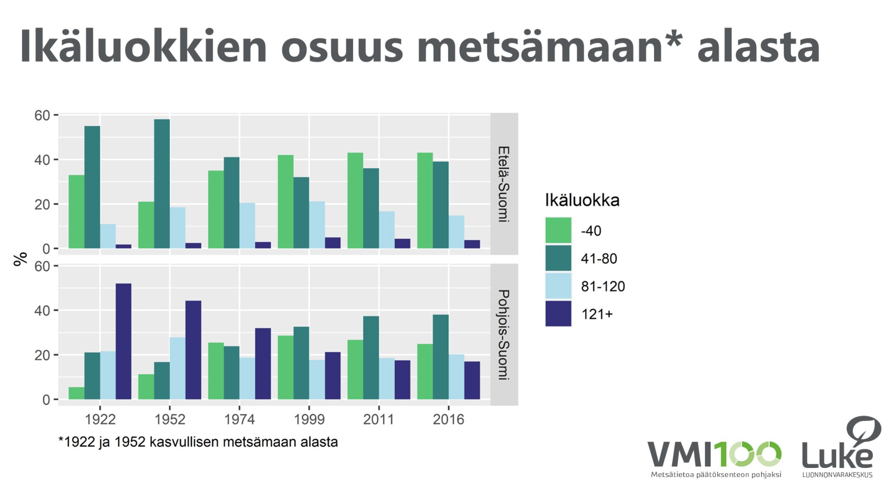

nature
Mänty, petäjä, honka, aihki, lakkapää, kelo
(different stages of pine's life)

Measured in the natural lifespan of pines, most of them are cut at 60 to 70 years old when they are about to come of age. Mänty means pine. A fully grown pine is called petäjä. At around 100 to 150 years old, the pine has reached its full height and continues growing only width from its top. It is said to have a lakkapää top. Such an old pine is called either honka, or aihki, a word derived from Sámi languages.
Unlike one might imagine, you can’t always tell the age of a pine by its height or width. The yearly growth can be very modest, and a real clue might be a twisted and knobbly trunk. When a tree dies standing, it’s called a kelo.
